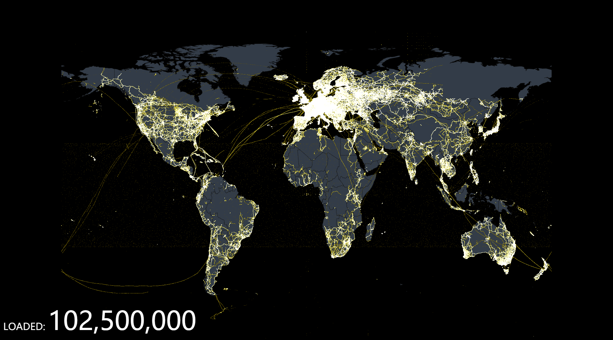
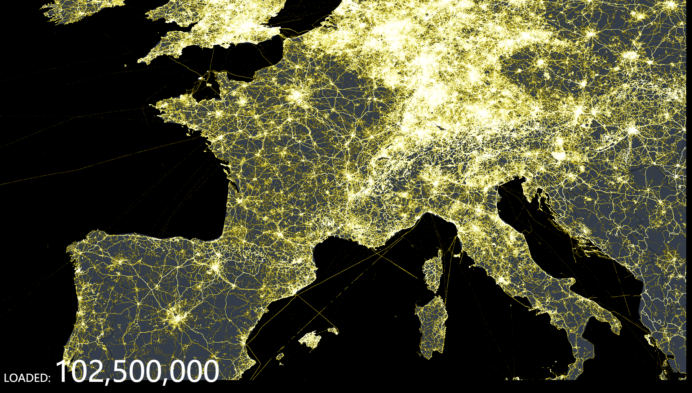
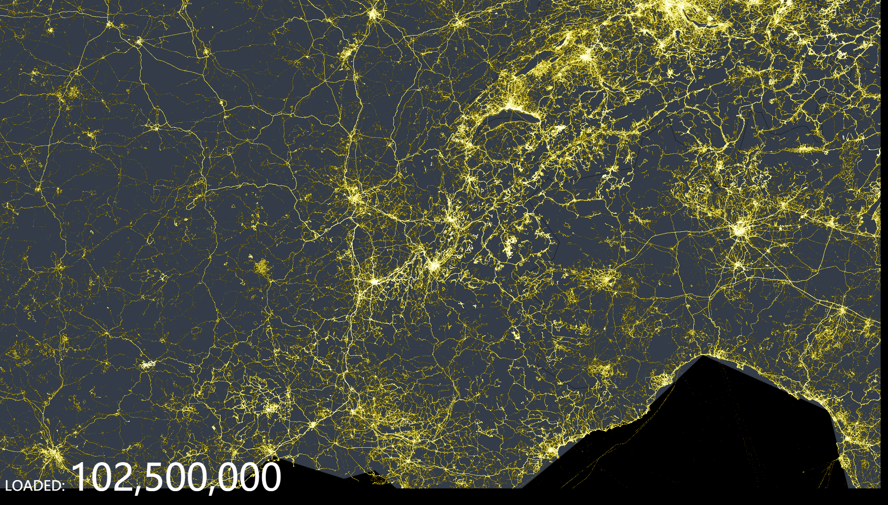
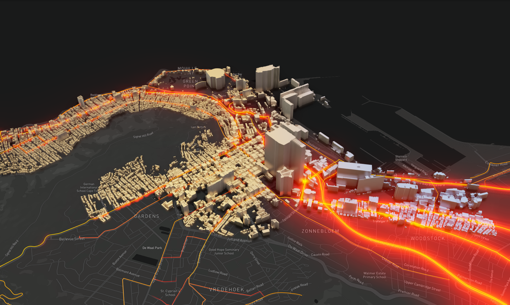
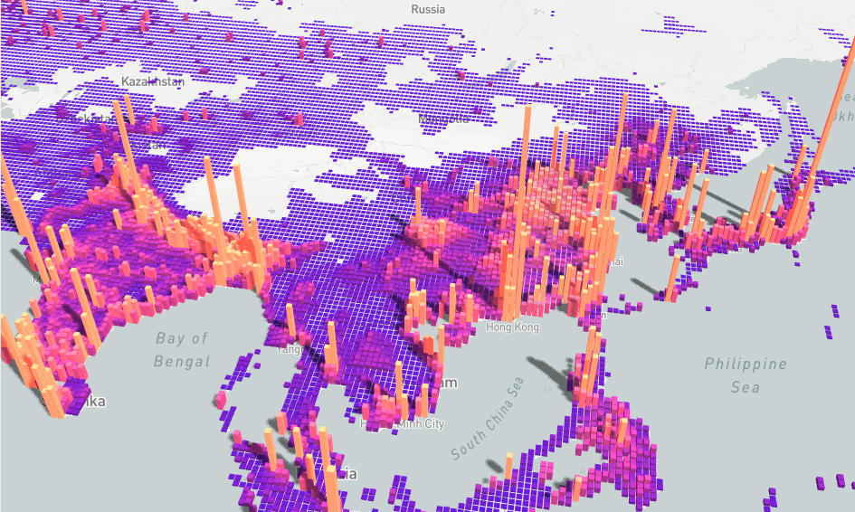

Features
ECharts is an open-sourced JavaScript visualization tool, which can run fluently on PC and mobile devices. It is compatible with most modern Web Browsers, e.g., IE8/9/10/11, Chrome, Firefox, Safari and so on. ECharts depends on ZRender, a graphic rendering engine, to create intuitive, interactive, and highly-customizable charts.
Abundant Chart Types
The basic chart types ECharts supports include line series, bar series, scatter series, pie charts, candle-stick series, boxplot series for statistics, map series, heatmap series, lines series for directional information, graph series for relationships, treemap series, sunburst series, parallel series for multi-dimensional data, funnel series, gauge series. And it's extremely easy to create a combinition of them with ECharts.
Besides the built-in chart types, ECharts also provide the customed series for users to create a specific chart types. To use it, you should only pass in a callback function named renderItem, and return any graphic elements you wish to draw to according to the data. What makes it even better is that it can interact with the existing ECharts components and you don't have to worry about the interaction with them.
If the default package size is too large for you, you can choose the chart types and components you need and download in the online builder.
Multiple Data Format Ready-To-Use
The built-in dataset attribute from ECharts v4.0 supports data formats including two-dimensional table, key-value object, and so on. The map from data to graphic can be easily set by the encode attribute. This is a more intuitive way to think when developing a chart, and it saves much time writing data-converting steps for developpers. Futhermore, it saves memory since different components can share on piece of data rather than copying.
ECharts supports TypedArray, which occupies less memory than array and is more gabbage-collection-friendly. For big data visualization, it is suggested to use TypedArray to improve performance.
Data Visualization of Tens of Millions on Web
With the help of imcremental rendering technique since v4.0 and optimization of all ascpects, ECharts can display the visualization of tens of millions of data. What's more, interactions like scaling and transforming are fluent all the same.
Tens of millions of data usually takes over hundreds of MB spaces. ECharts provide streaming data ability since v4.0 and makes it possible to render as much data as loaded from WebSocket. There is no need to wait for all data to be loaded to start rendering.

Mobile Optimization
ECharts has been carefully optimized for mobile interaction, such zooming and panning the coordinate system with your fingers on small screens. The PC users can also use the mouse wheel to do the same interaction.
The fine-grained modularity and packaging mechanism allows ECharts to have a small package size on the mobile, and the optional SVG rendering engine makes the memory cost of the mobile much smaller.
Multi-Rendering Solutions and Cross-Platform Support
ECharts supports rendering charts in the form of Canvas, SVG (v4.0+), and VML. VML is compatible with lower versions of IE; SVG reduces the memory cost on mobiles; and Canvas can easily handle large data visualization and special rendering effects. Different rendering methods provide more choices, making ECharts performs better in different scenarios.
In addition to PC and mobile browsers, ECharts can also be used with node-canvas on Node for efficient server-side rendering (SSR). And ECharts support Wechat Applet rendering since v4.0.
Community contributors also provide us with a variety of different language extensions. For example, pyecharts for Python, recharts for R, ECharts.jl for Julia and so on.
We hope that the platform and language will not be the limit for everyone to use ECharts for visualization!
Interactive Data Exploration In-Depth
Interaction is an important means of mining information from data. Overview first, zoom filtering to view details as needed is a basic requirement for data visualization interaction.
ECharts has been on the road of interaction. We have provided legend, visualMap, dataZoom, tooltip, brushing and other ready-to-use interactive components, which can perform interactive operations such as multi-dimensional data screening, view zooming, and display details on the data.
Multi-Dimensional Data Support and Rich Visual Coding
ECharts 3 began to strengthen support for multi-dimensional data. In addition to the common multi-dimensional data visualization tools such as parallel coordinates, for traditional scatter plots, etc., the input data can also be multiple dimensions. With the rich visual coding provided by the visual mapping component visualMap, it is possible to map data of different dimensions to color, size, transparency, shading, etc. Different visual channels.
Dynamic Data
ECharts is driven by data, and changes in data drive changes in the chart. So the implementation of dynamic data has become extremely simple, just need to get the data, fill in the data, ECharts will find the difference between the two sets of data and then use the appropriate animation to represent the data changes. The timeline component can present data information in a higher time dimension.
Special Effects
ECharts provides eye-catching effects for the visualization of geographic data such as line data and point data.
More Powerful and Beautiful 3D Visualization with GL
Do you want to achieve 3D visualization in VR, large screen scenes? We provide WebGL-based ECharts GL. You can use ECharts GL to draw 3D Earth, buildings, and population distribution histograms as easily as ECharts common components. Furthermore, we also provide configuration items so that you can get artistic results with a few lines of configuration!



Accessibility
When we talk about visualization, we tend to naturally associate it with seeing, but it is one-sided. The W3C has developed the Accessible Rich Internet Applications Suite (WAI-ARIA), which aims to make web content and web applications accessible to more people with disabilities.
ECharts 4.0 complies with this specification and supports automatic generation of descriptions based on chart configuration items, enabling people with visual disabilities to understand the chart content with the help of reading devices, so that charts can be accessed by more people!